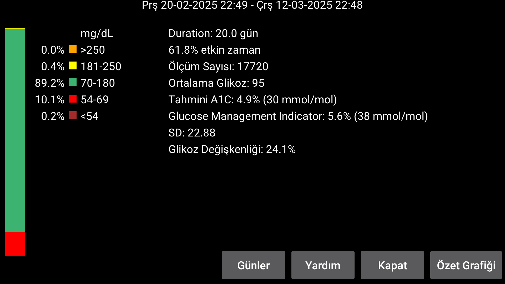
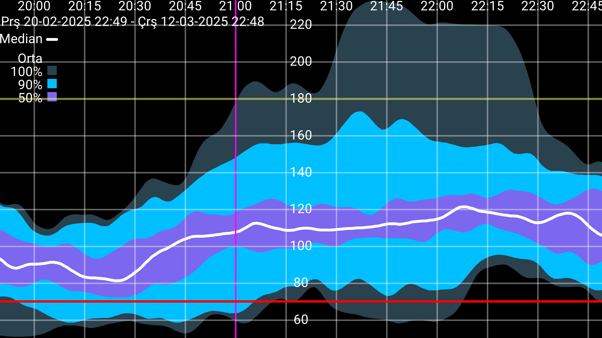

be de fr it nl pl pt ru tr uk zh en
Bazi istatistikler küçük degisikliklerle AGP'den alinmistir.
Analiz edilen gün sayisi Günler dügmesine basilarak degistirilebilir. Süre, ekran konumunun bittigi noktada sona erer ve belirtilen gün sayisini geriye dogru kapsar. Tüm veriler yalnizca sensörden (Juggluco'da akis olarak adlandirilir) Bluetooth araciligiyla her dakika alinan glikoz degerlerine dayanmaktadir.
Ekranin solunda, belirli glikoz araliklarina düsen ölçümlerin yüzdesi bulunur. Standart araliklar her zaman gösterilir. sol menü->Ayarlar->Görüntü'de standart olmayan bir hedef araligi belirlenirse hedefte geçen süre, standart araliklarin altinda gösterilir.
Juggluco'nun sensörden glikoz degerlerini aldigi zaman yüzdesi.
Tahminler HOrtalama glikozdan eski bir formülle A1c (Nathan et al (2008)). Bakiniz https://pr ofessional.diabetes.org/diapro/glucose_calc hesaplamak için.
Burada gösterilmektedir insanlar Abbott's Libre'de gösterilen degeri ariyor 2 uygulamasi. GMI bu göstergenin 2018'deki bir yedegidir.
Genel olarak kullanilan belirli bir formülle ortalama glikozdan hesaplanir (bakiniz https://www.jaeb.org/gmi/). HbA1c'nin (ayrica A1c olarak da bilinir) yüzde ve mmol/mol olarak verilen deneysel olarak belirlenmis bir tahminidir. Benim için kisisel olarak Tahmini A1C, GMI'dan daha iyi bir tahmin edicidir, ancak Abbott'un Libre 3 uygulamasinda kullanilir.
Varyasyon katsayisi, %CV=(SD/ortalama)*100%, glikoz degiskenliginin bir ölçüsü. Daha yüksek bir varyasyon katsayisi, glikoz degerlerinin ortalamadan daha uzak oldugu anlamina gelir.
(Yalnizca en az 9 günlük akis glikoz degeri mevcut oldugunda kullanilir).
Bu dönemdeki tüm akis glikoz degerleri, günün her dakikasi için glikoz degerlerinin nasil dagildigini gösteren bir bilesik grafik çizmek için alinir. Siyah veya beyaz medyan çizgisi, günün her dakikasinda glikoz degerlerinin %50'sinin altinda bulundugu glikoz degerini gösterir. En açik mavi, tüm degerlerin bulundugu alandir. Biraz daha koyu mavi, degerlerin %90'inin bulundugu medyanin etrafindaki alandir. En koyu mavi, degerlerin %50'sinin medyaninin etrafindaki alandir. Alanlarin sinirlarini çizgiler olarak görüyorsaniz, asagidaki gibi de tasvir edebilirsiniz: En düsük çizginin altinda degerlerin %0'i, ikinci en düsük çizginin altinda (en açik mavi ile orta koyu mavi arasinda) degerlerin %5'i, üçüncü çizginin altinda (en koyu mavi ile orta koyu mavi arasinda) degerlerin %25'i, siyah çizginin altinda degerlerin %50'si. Bunu %75, %95 ve %100 takip eder.
Estetik sebeplerden dolayi egri binom filtresiyle yumusatilir.
Özet grafigini kapatmak için ekrana dokunun, ancak sol veya sag sinira dokunuldugunda grafik gün içinde geriye veya ileriye dogru hareket eder. Egri ayrica kaydirilarak ileri geri hareket ettirilebilir. Zaman ölçegi iki parmagi birbirine dogru veya birbirinden uzaga hareket ettirerek degistirilebilir.